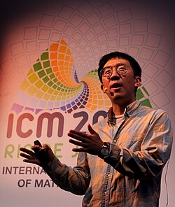

June Huh | |
|---|---|
 Huh at the 2018 International Congress of Mathematicians | |
| Born | June 9, 1983 Stanford, California, U.S |
| Alma mater | |
| Known for | Resolution of the Heron-Rota-Welsh conjecture with algebraic geometrical method |
| Spouse | Nayoung Kim[1] |
| Children | 2 |
| Awards |
|
| Scientific career | |
| Fields | Mathematics |
| Institutions | |
| Thesis | Rota's conjecture and positivity of algebraic cycles in permutohedral varieties (2014) |
| Mircea Mustață | |
| Korean name | |
| Hangul | 허준이 |
| Hanja | 許埈珥 |
| RR | Heo Juni |
| MR | Hŏ Chuni |
| IPA | [hʌ̹ t̟͡ɕun i] |
June E Huh (Korean: 허준이; born June 9, 1983) is an American mathematician who is currently a professor at Princeton University. Previously, he was a professor at Stanford University.[2][3] He was awarded the Fields Medal[4] and a MacArthur Fellowship in 2022. He has been noted for the linkages that he has found between algebraic geometry and combinatorics.[5]
Huh was born in Stanford, California while his parents were completing graduate school at Stanford University. He was raised in South Korea, where his family returned when he was approximately two years old. His father was a professor of statistics at Korea University, while his mother was a professor of Russian language at Seoul National University.[1][6] Poor scores on elementary school tests convinced him that he lacked the innate aptitude to excel in mathematics. He later dropped out of high school to focus on writing poetry after becoming bored and exhausted by the constant routine of relentless studying.[6] Huh has been described as a late bloomer, both in terms of his career phenomena and with regards to his academic and professional development.[7] Huh matriculated at Seoul National University in 2002, but found himself initially unsettled and suffering from depression.[8][9] He pinned his initial career aspirations on becoming a science journalist and decided to major in physics and astronomy, but compiled a poor attendance record and had to repeat several courses that he initially failed at.[6]
Early in his studies he was mentored by Japanese award-winning mathematician Heisuke Hironaka, who went to Seoul National University as a visiting professor.[1] Having failed several courses, Huh took an algebraic geometry course under Hironaka in his sixth year which focused on singularity theory and was based on Hironaka's current research rather than established teaching material. Huh credited the course with sparking his interest in research-level math.[6] Huh then proceeded to complete a master's degree at Seoul National University, while frequently travelling to Japan with Hironaka and acting as his personal assistant.[6] Due to his poor academic record as an undergraduate, Huh was rejected from all but one of the American universities that he applied to. He started his Ph.D. studies at the University of Illinois Urbana-Champaign in 2009, before transferring to the University of Michigan in 2011.[6] He graduated in 2014 with a thesis written under the direction of Mircea Mustață at the age of 31.[10] He was awarded the Sumner Byron Myers Prize for his PhD thesis.[11]
In 2009, during his PhD studies, Huh proved the Read–Hoggar conjecture,[12][6][13][14] about the unimodality of coefficients of chromatic polynomials in graph theory, which had been unresolved for more than 40 years.[6][15] In joint work with Karim Adiprasito and Eric Katz, he resolved the Heron–Rota–Welsh conjecture on the log-concavity of the characteristic polynomial of matroids.[16][1]
With Karim Adiprasito, he is one of the five winners of the 2019 New Horizons in Mathematics Prize, associated with the Breakthrough Prize in Mathematics.[17] He was a winner of Blavatnik Award for Young Scientists (U.S. Regional) in 2017.[18] In 2018, Huh was an invited speaker at the International Congress of Mathematicians in Rio de Janeiro. In 2021, he received the Samsung Ho-Am Prize in Science for physics and mathematics.[19]
Huh was awarded the 2022 Fields Medal for "bringing the ideas of Hodge theory to combinatorics, the proof of the Dowling–Wilson conjecture for geometric lattices, the proof of the Heron–Rota–Welsh conjecture for matroids, the development of the theory of Lorentzian polynomials, and the proof of the strong Mason conjecture".[20] Huh is the seventh recipient of East Asian ancestry and the first winner of Korean ancestry.[21]
Huh is married to Kim Nayoung, whom he met during his studies while attending Seoul National University. Kim is a graduate of Seoul National University where she earned her doctorate in mathematics. The couple have two sons.[6]
{kind=link}